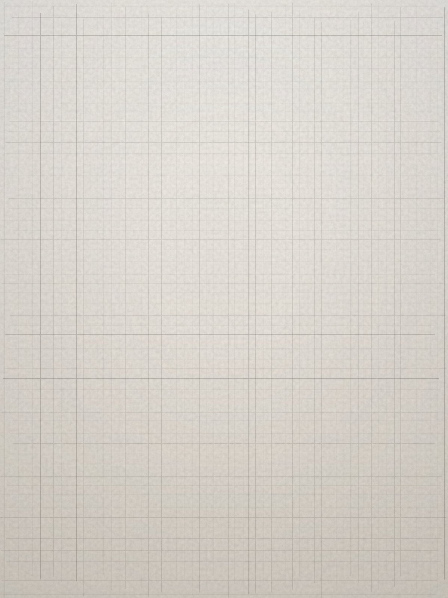
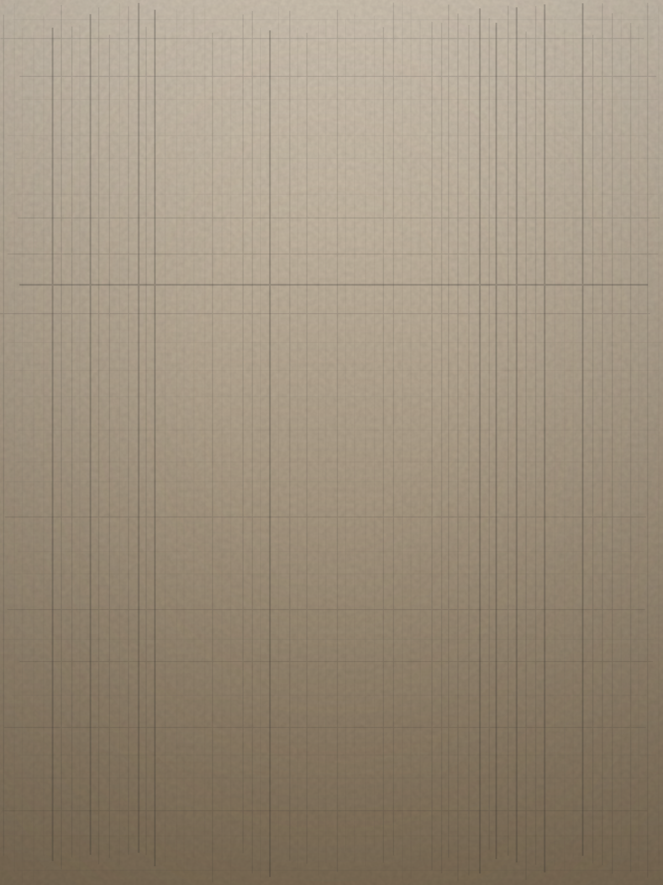
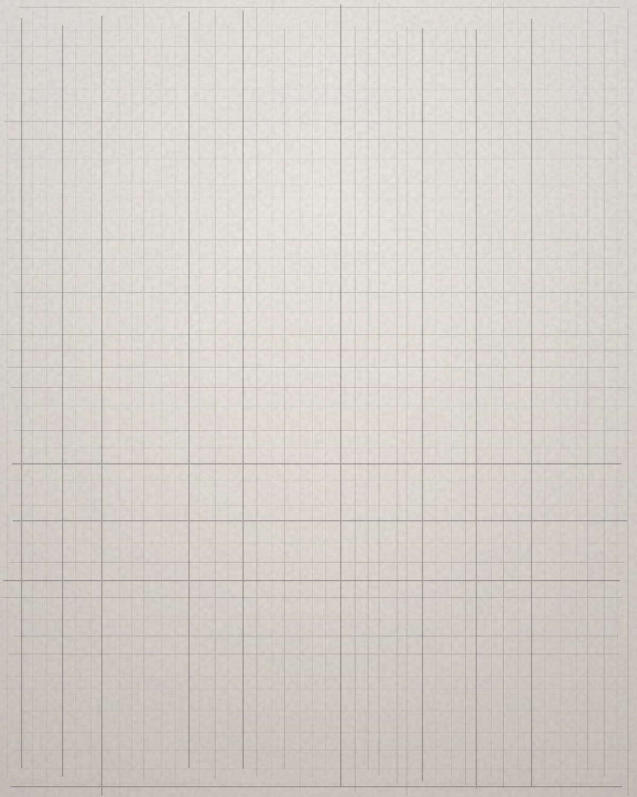

Denim
second life
Old jackets and jeans, opened at the seams and rebuilt by one hand.
Pieces made in small numbered drops, by a maker who is named on the tag as co-creator and paid for what they made. Ten pieces. Numbered. Then gone.
00 / Prologue
You have been wearing someone's work your whole life.
You just never knew who.
Not the high street. Not the heritage house.
The lane nobody turned into.
01 / The Hands
Every piece carries a woven tag with a name that is not ours, a number, and a mark. A salary first. Then a share of what they made. The tag is where credit becomes physical.
02 / The Canvas
Roughly thirty percent of a piece is the canvas. Seventy percent is the soul.
second life
Old jackets and jeans, opened at the seams and rebuilt by one hand.

transformed
A carpet that had a floor becomes a coat that has a person.
heavy embroidery
Hands that have done something a thousand times.

tattooed
Ink into hide. Footwear and bags that carry a drawing, not a logo.
the search
We are out looking. When we find the hand, you will meet it here first.
03 / The Drop
Ten pieces. Numbered. Then gone. A run is never restocked.

Denim, Second Life 02 Sinगली × MATS, 5/10 ₹3,500 Piece 5 of 10 Carpet Tote Sinगली × MATS, 6/10 ₹3,900 Piece 6 of 1004 / The Tag
Credit as the product. Dignity is the operating model, not the marketing.
Read the house notesThe first five hundred people to buy a piece get a permanent page on this site. A record, not a loyalty programme. Names, piece numbers, the year.
See the recordFounding places taken: 0 of 500